D
Designer / Art Director
Designerデザイン担当
ブランドの世界観を設計し、UI・アートディレクションを担当。「らしさ」を細部まで宿したビジュアルを追求します。
- Art Direction
- UI / UX
- Branding

About us
irodori は、「彩り」を意味します。
一つひとつのWebサイトに、彩りを添えるチームです。
デザインだけではサイトは完成しません。技術だけでも、想いは伝わりません。 デザイナーとコーダーがそれぞれの専門性を掛け合わせ、お客様らしさという“色”を大切に、 見る人にも使う人にも心地よいWeb体験を届けます。
企業には、それぞれの個性があります。その個性＝色を引き出す。 一つとして同じ色はありません。それぞれのブランドらしさを、私たちが形にします。
Members
Designer / Art Director
ブランドの世界観を設計し、UI・アートディレクションを担当。「らしさ」を細部まで宿したビジュアルを追求します。
Coder / Frontend Engineer
デザインの意図を1px単位で再現する実装を担当。表現力のあるアニメーションと、速く堅牢なフロントを構築します。
Service
会社やお店の“顔”となるホームページを、目的に合わせて一から制作。見た目の美しさと、使いやすさ・成果の両方を大切につくります。
ブランドの魅力が伝わるデザインを設計。配色・写真・文字組みまでこだわり、“あなたらしさ”を目に見える形にします。
デザインを忠実に、動きのある表現で再現。スマホ対応・表示速度・SEOにも配慮した、しっかり動くサイトに仕上げます。
ロゴやキャッチコピー、全体のトーンまで一貫して設計。Webを入り口に、ブランドの世界観を整えます。
LINE公式アカウントの開設から、リッチメニュー・自動応答・配信の設計まで対応。集客とリピートにつながる仕組みをつくります。
WordPressなどで“自分で更新できる”仕組みを構築。公開後の修正・保守・改善まで、長く伴走します。
チラシ・名刺・ロゴなどの紙もの／グラフィック制作は、信頼できるパートナーと連携して対応。Webと世界観を揃えて、まとめてお任せいただけます。
Flow
目的・課題・ご予算・納期をお伺いし、方向性をすり合わせます。
設計と全体方針をご提案。内容にご納得いただいたうえで契約します。
デザインから実装まで、進捗を共有しながら丁寧に制作を進めます。
公開後の更新・保守や追加施策まで、長期的に伴走します。
FAQ
コーポレート・採用・ブランド・LP・ECなど、幅広いジャンルに対応しています。まずはご相談ください。ジャンルによっては得意な事例をご紹介します。
お持ちの素材があればご活用いただけますが、ない場合はストックフォトのご提案や、撮影ディレクションのご相談も可能です。
いいえ。ラフなメモや箇条書きからでも大丈夫です。ヒアリングをもとに、構成やコピーの作成もお手伝いできます。
はい。部分的な修正・リニューアル・運用代行にも対応しています。現状のサイトを拝見したうえでご提案します。
スケジュールの状況によりますが、可能な限り柔軟に対応します。納期がお決まりの場合は、まずお早めにご連絡ください。
もちろんです。オンラインでの打ち合わせが中心のため、全国どこからでもご依頼いただけます。
ご安心ください。取得・設定・公開まわりまで、専門用語をかみ砕いてご案内・代行します。
はい。WordPressでの構築や、お客様ご自身で更新できるCMS化にも対応しています。
はい。更新代行・軽微な修正・保守プランなど、公開後も継続的にサポートいたします。
Contact
お客様のお話を伺いながら、課題や目的を整理し、最適なご提案をいたします。
まずはお気軽にご相談ください。
補助金について
ホームページ制作をご検討の方へ。小規模事業者持続化補助金などをご利用いただける場合があります。事業内容や公募時期によって対象となるか異なりますので、お気軽にご相談ください。